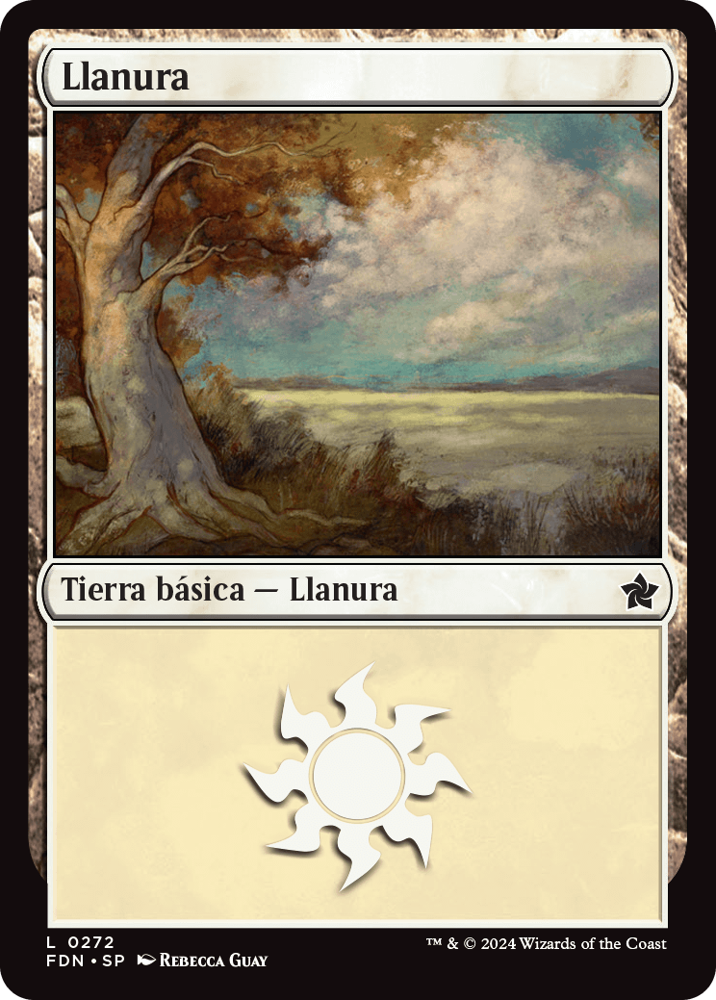

Grupo 1: [Nombre del Mazo]
Llanura (7)

Tipo: Tierra BásicaLlanura de la caja de cimientos.
Dragón de Cimientos
 Tipo: Criatura — Dragón
Tipo: Criatura — DragónRara Mítica
Vuela. Una fuerza imparable.
Grupo 2: [Siguiente Mazo]
Crecimiento Gigante
 Tipo: Instantáneo
Tipo: InstantáneoInfrecuente